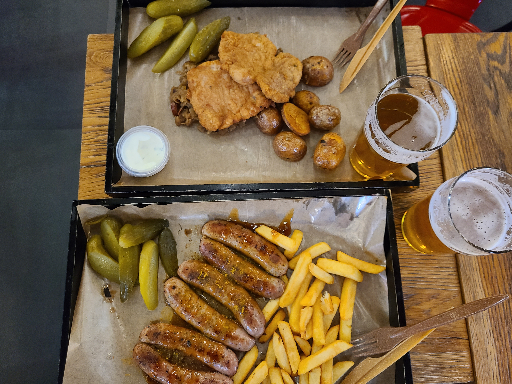
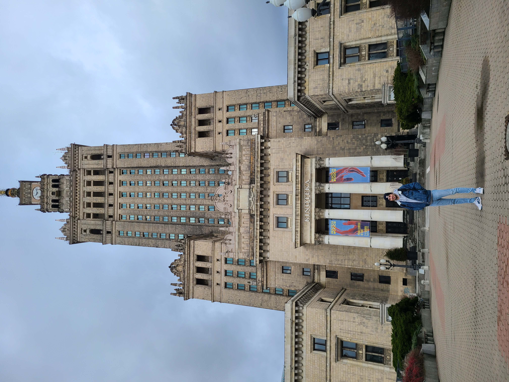
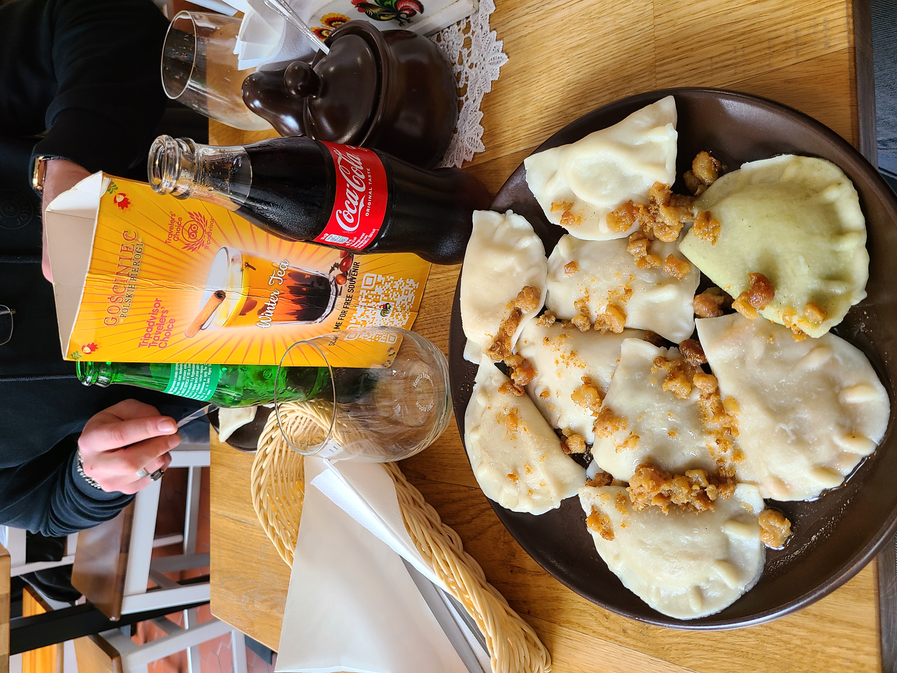
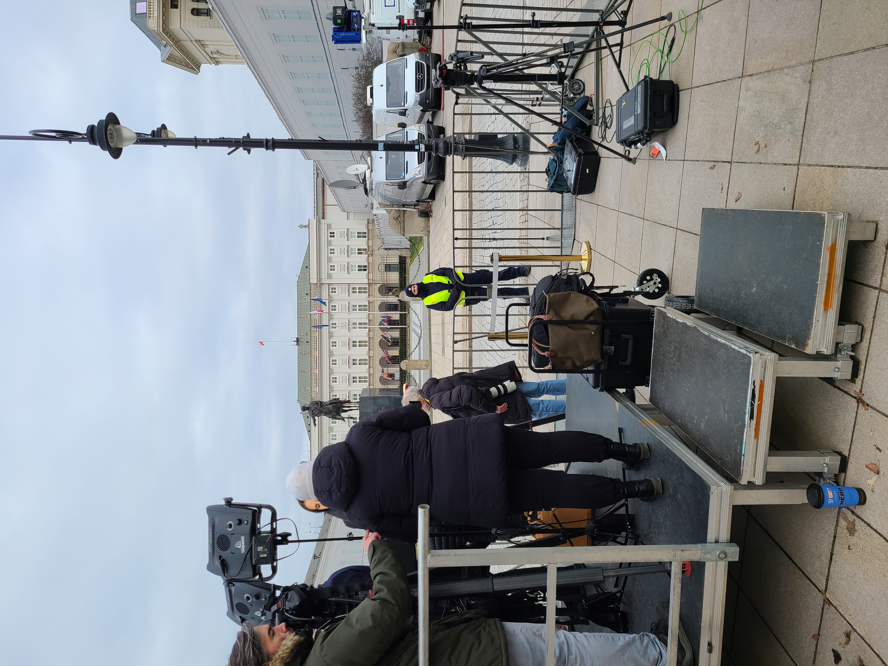

Visit
A weekend in Warsaw
My friend Eloi and I should stop in Warsaw before arriving in Łódź because of our flight, who did not reach Łódź directly. So, we have booked an Airbnb flat for 2 people in the center of the Polish capital for 2 nights to visit before coming to Łódź.
At our arrival at the airport, we planned to join our flat by train. We chose train because we thought it was cheaper than a taxi and easier than buses because our luggage. The problem was train to the Centralna train station was cancelled and we did not understand why at this moment. Finally, we decided to take a taxi. The taxi said our destination was difficult to reach because presidents Volodymyr Zelensky and Joe Biden were at a meeting in Warsaw! It means that the city enter was blocked by a lot of policemen... 15 minutes later we arrived at our Airbnb flat with all our luggage.
In the evening we had explored the neighbourhood and visited a church before trying to find a nice place to eat some typical food from Poland. We funded Hala Koszyki, it is a cool place with several restaurants with only street food from all over the world.

My friend in Hala Kosziky.
The coolest thing is that you can order a meal and sit with other people who ordered in another restaurant than yours. I ordered polish sausage and pickles with fries and my friend tried fried pork meat with potatoes and polish pickles. We also wanted to taste polish beer.

Currywurst with beer in Hala Koszyki.
After a good night we visited the Warsaw city center : we went to the Science and Culture Palace to take pictures of the view on the terrace, I was a little bit disappointed because the pictures looked like as all big cities in France, but we were happy to have done it.

Me in front of the science and culture plalace.
Then, we wanted to see polish shops and mall to compare them to the French ones before eating another typical polish meal: the Pierogis. There are raviolis filled with different foods such as meat or vegetables, cooked fish etc... and we enjoyed eating them.

Pierogis polish meal at restaurant.
During the last part of the day, we only walked into the old town because the Royal castle was closed due to the meeting between Volodymyr Zelensky and Joe Biden. We also saw some journalists at the presidential palace who were waiting for them with their cameras and mike for many information channels. 
Journalist at president palace waiting for Joe Biden and Volodymyr Zelensky.
Sources:
- Pictures from my phones